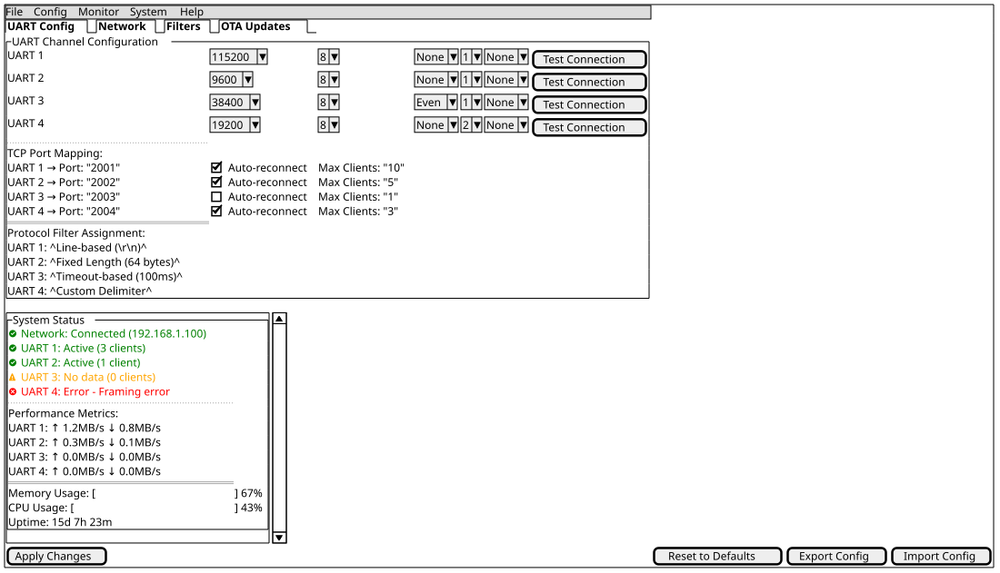
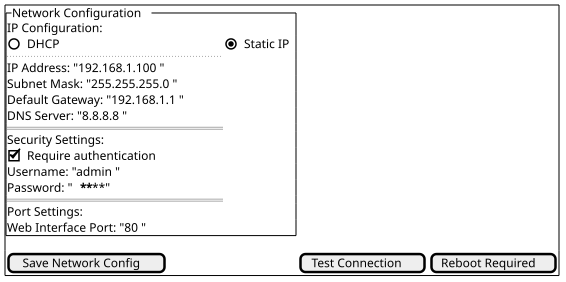
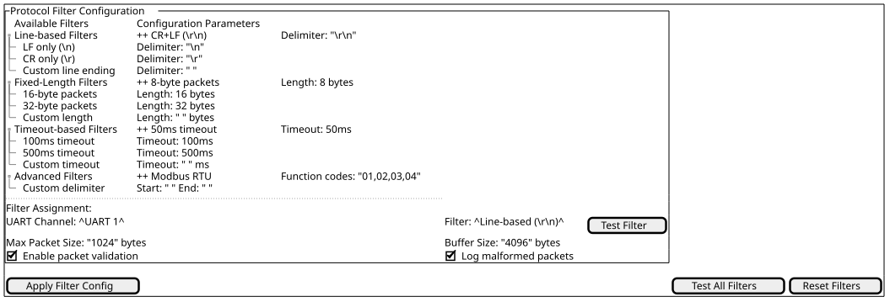
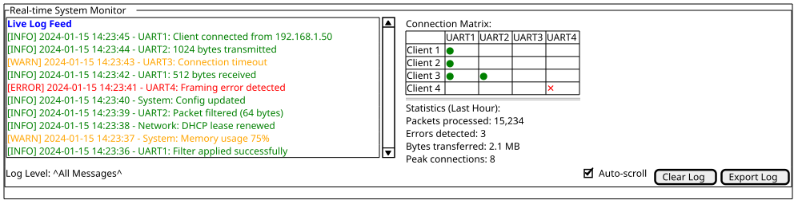
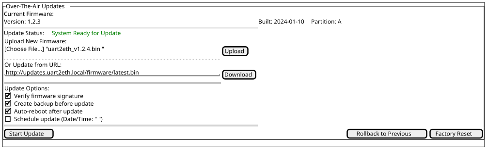

Input stream: "sensor1=23.5\r\ntemperature=18.2\r\nhumidity=65\r\n"
Delimiter: "\r\n"
Output packets:
- "sensor1=23.5"
- "temperature=18.2"
- "humidity=65"
Cross-cutting Concepts
Protocol Filtering
Protocol filtering provides a configurable mechanism to determine packet boundaries in UART data streams. The system implements pluggable filters that analyze incoming byte streams to identify complete data units for efficient TCP transmission.
Packet Determination Algorithm
The protocol filter operates on incoming UART data to identify discrete packets using configurable delimiters and patterns:
Basic Line-Based Filter Example
Filter Types
The system supports multiple filter implementations:
-
Line-based filters: Use configurable line terminators (\r\n, \n, \r)
-
Fixed-length filters: Extract packets of predetermined byte count
-
Delimiter-based filters: Use custom byte sequences as packet boundaries
-
Timeout-based filters: Form packets after configurable idle periods
Configuration Parameters
Each UART channel supports independent filter configuration:
-
Filter type selection
-
Delimiter specification (for delimiter-based filters)
-
Packet length (for fixed-length filters)
-
Timeout values (for timeout-based filters)
-
Maximum packet size limits
Web Management Interface
The web management interface provides system configuration and monitoring through a responsive web UI.
Main Interface Mockup

Network Configuration Panel

Protocol Filter Configuration

System Monitoring Dashboard

OTA Update Interface

Error Handling Strategy
Hierarchical Error Management
The system implements a three-tier error handling approach:
Application Layer Errors * Protocol parsing failures * Configuration validation errors * User authentication failures
Communication Layer Errors * UART framing/parity errors * TCP connection failures * Network timeout conditions
System Layer Errors * Memory allocation failures * Hardware malfunction detection * Critical system resource exhaustion
Error Recovery Mechanisms
Each error category implements specific recovery procedures:
-
Graceful degradation: Non-critical failures maintain partial functionality
-
Automatic retry: Transient errors trigger configurable retry attempts
-
Failover switching: Critical component failures activate backup systems
-
User notification: All error conditions generate appropriate user feedback
Security Architecture
Authentication and Authorization
Multi-level Access Control * Administrator: Full system configuration access * Operator: Monitoring and basic configuration changes * Guest: Read-only monitoring access
Session Management * Token-based authentication with configurable expiry * Automatic session timeout after inactivity * Concurrent session limits per user role
Data Protection
Network Security * Configurable firewall rules per UART channel * Rate limiting for TCP connections * Intrusion detection for unusual traffic patterns
Configuration Management
Flash Persistence Strategy
Configuration data persistence uses raw binary storage with flash ring buffer management for wear leveling and power-loss safety:
Storage Format
* Raw binary copy of shared_memory_layout_t structure written directly to flash
* SHA256 checksum per flash block for integrity verification (checksum stored first in block for hash exclusion)
* Revision counter incremented on each write operation
* No JSON parsing or schema validation overhead
* Shared memory statically allocated within a flash_persistence_block_t structure
Flash Ring Buffer Management
* 8 flash blocks (64KB each) organized as circular ring buffer
* Each block stores complete shared_memory_layout_t snapshot + metadata
* Write operations advance to next block in ring (wear leveling)
* Sector-by-sector updates: only changed sectors reprogrammed for efficiency
* Power-loss safety through flash_safe_execute() for interrupt-safe operations
Startup Recovery Process
* Read all 8 ring buffer blocks from flash (partition ID=3)
* Verify SHA256 checksum for each block
* Select block with highest revision counter AND valid checksum
* Load selected block data into shared_memory_layout_t
* Invalid blocks ignored, fallback to factory defaults if no valid blocks
* Device mode enforcement: GPIO pins and channel enables applied from device_mode.h
Write-Back Strategy
* Deferred writes executed by Core1 main loop
* Write frequency limited to maximum once per 30 seconds
* Write triggered only when shared_memory_layout.revision_counter changes
* Complete shared memory structure written per block with sector-level optimization
* Write-in-progress tracking prevents concurrent write operations
Configuration Data Scope
Persistent configuration includes: * System settings (network, users, security) * UART channel configurations (baud rate, protocol filters) * Performance tuning parameters * User account data and authentication settings
Factory Reset and Recovery
Factory Reset Process
* Erase all 8 ring buffer blocks
* Call shared_memory_force_reinit() to restore factory defaults
* Log factory reset event as first entry in clean log system
Error Recovery * Corrupted blocks detected via SHA256 mismatch * Fallback to previous valid block if available * Complete factory reset if no valid blocks found
Configured vs. Runtime Network State
The system holds two distinct sets of network parameters that must not be conflated:
-
Configured state:
static_ip,static_netmask,static_gatewayinshared_memory_layout_t.config.network. Persisted in flash. Only applied to the interface when DHCP is disabled. This is what the configuration form on the web interface edits and pre-fills. -
Runtime state: the addresses currently active on the lwIP
netif(assigned by DHCP, or copied from the configured state in static mode). This is what status displays must show.
Rules:
-
Any display of the current network situation (device status page, diagnostics, logs) reads the runtime state via the
network_manageraccessorsnetwork_manager_get_ip_address(),network_manager_get_netmask()andnetwork_manager_get_gateway(). These returnfalsewhile the interface is down or unconfigured; callers then display "Not Available" instead of a stale value. -
Any configuration form reads and writes the configured state in shared memory. It never reads the
netif. -
Code outside
network_managerdoes not access thenetifdirectly for address information.
Rationale: a defect existed where the device status page rendered the
configured static_gateway and static_netmask while DHCP was active,
permanently displaying the static values instead of the DHCP-assigned ones.
The IP address on the same page already used the runtime accessor and was
correct. Keeping one accessor per runtime address value makes the correct
data source the obvious one.
Testing and Validation Strategy
The UART2ETH system requires comprehensive validation to ensure protocol compliance, performance characteristics, and reliability under various operating conditions. This is achieved through a multi-layered testing approach combining unit tests, integration tests, and external black-box validation.
External Protocol Validation
Black-Box Testing Approach
External validation uses network-based TCP clients to test the system from the perspective of real-world applications. This approach validates:
-
Protocol compliance with message format specifications
-
End-to-end performance under realistic network conditions
-
System behavior under stress and error conditions
-
Regression detection across firmware updates
Protocol Validation Coverage
The validation strategy addresses the complete protocol specification:
Protocol Format Validation
Valid Message Format: '#' + 4_hex_digits + payload + '!\r\n'
Valid Characters: '0'-'9', 'A'-'F', '#', '!', '\r', '\n'
Maximum Length: 1024 bytes total message length
Example Valid Messages:
#1234!\r\n (minimal valid message)
#ABCD<payload_content>!\r\n (message with payload)
#0000<958_byte_payload>!\r\n (maximum length message)
Invalid Message Examples:
$1234!\r\n (invalid start character)
#123!\r\n (insufficient hex digits)
#1234<payload>!\n (missing \r before \n)
#1234<1025_byte_total>!\r\n (exceeds maximum length)Test Scenario Categories
-
Compliance Testing
-
Valid message format verification
-
Invalid message rejection testing
-
Character set validation
-
Length limit enforcement
-
-
Performance Testing
-
Sustained throughput measurement (target: 500kBaud)
-
Latency analysis (target: <5ms end-to-end)
-
Concurrent connection handling
-
Load saturation testing
-
-
Reliability Testing
-
Message ordering verification
-
Connection recovery testing
-
Error injection scenarios
-
Long-duration stability testing
-
Statistical Analysis Framework
External validation tools provide quantitative assessment:
-
Throughput Metrics: kbytes/s sustained transfer rates
-
Latency Analysis: Minimum, median, maximum round-trip times
-
Reliability Metrics: Message delivery success rates, ordering compliance
-
Error Characterization: Invalid message handling, recovery time measurement
Integration with Development Workflow
Continuous Validation
External testing tools integrate with the development process:
-
Automated execution as part of build validation
-
Performance baseline establishment and regression detection
-
Protocol compliance certification for release candidates
-
Cross-reference with target debug output for failure analysis
Test Environment Configuration
Network Test Setup
Development Machine: 10.10.10.11 (TCP client)
UART2ETH Target: 10.10.10.10 (TCP server)
Test Ports: 4001-4004 (UART channels 0-3)
Debug Monitoring: /dev/ttyUSB0 (target debug output)Validation Tool Characteristics
-
Multi-connection Testing: Concurrent validation across all UART channels
-
Configurable Test Scenarios: Parameterized test execution for different validation focuses
-
Real-time Statistics: Live performance monitoring during test execution
-
Correlation Capability: Cross-reference with target debug logs for comprehensive analysis
Risk Mitigation Through External Validation
External testing directly addresses key technical risks:
-
Protocol Implementation Risks: Systematic format validation prevents integration failures
-
Performance Regression: Baseline comparison detects degradation during development
-
Concurrency Issues: Multi-connection testing reveals race conditions and resource conflicts
-
Error Handling Gaps: Invalid message testing ensures robust error recovery
Protocol Validation Tool Architecture
Implementation Structure
The external protocol validation tool implements a modular Python-based architecture using asyncio for concurrent TCP connections and comprehensive testing capabilities:
Tool Architecture Overview
uart2eth_protocol_validator.py # Main entry point
├── protocol/
│ ├── message_generator.py # Creates test messages
│ ├── validator.py # Validates protocol compliance
│ └── formats.py # Message format definitions
├── networking/
│ ├── tcp_client.py # TCP connection management
│ ├── connection_pool.py # Manages multiple connections
│ └── async_handler.py # Async message handling
├── testing/
│ ├── test_scenarios.py # Different test scenario implementations
│ ├── stress_tester.py # Stress testing logic
│ └── performance_monitor.py # Performance measurement
├── statistics/
│ ├── metrics_collector.py # Collects performance data
│ ├── reporter.py # Generates reports
│ └── baseline_manager.py # Handles baseline comparison
└── utils/
├── config_parser.py # Command line argument handling
└── logger.py # Logging setupCore Components
-
Protocol Layer: Message generation and validation according to '#' + 4_hex_digits + payload + '!\r\n' format
-
Networking Layer: Asyncio-based TCP client management with concurrent connection handling
-
Testing Layer: Configurable test scenarios for compliance, performance, and stress testing
-
Statistics Layer: Real-time metrics collection, statistical analysis, and reporting
-
Utilities Layer: Configuration management and structured logging
Message Generation Strategy
The tool generates comprehensive test message categories:
-
Minimal Messages: '#0000!\r\n' to '#FFFF!\r\n' (systematic hex digit coverage)
-
Variable Payload: Messages with 8-1024 byte total lengths for size testing
-
Protocol Violations: Invalid characters, wrong format, length violations for error testing
-
Stress Patterns: High-frequency, concurrent, and sustained transmission patterns
Performance Measurement Framework
Real-time statistical collection provides quantitative validation:
-
Round-trip Time Measurement: High-precision timing using time.perf_counter()
-
Throughput Calculation: Sustained kbytes/s measurement across all connections
-
Latency Analysis: Min/median/P95/P99/max statistical distribution
-
Connection Reliability: Drop/reconnect counting and recovery time measurement
Integration with Development Infrastructure
-
UART Logger Coordination: Synchronization with persistent_uart_logger.sh for debug correlation
-
Baseline Management: Performance regression detection through saved baseline comparison
-
CI/CD Integration: Exit code reporting for automated build validation
-
Export Capabilities: JSON/CSV/human-readable output formats for different use cases
Performance Optimization
Buffer Management
Dynamic Buffer Allocation * Adaptive buffer sizes based on data flow patterns * Memory pool management for high-frequency allocations * Garbage collection for unused buffer segments
Flow Control * Back-pressure mechanisms for overloaded channels * Priority queuing for different data types * Load balancing across multiple TCP connections
Monitoring and Metrics
Real-time Performance Tracking * Throughput measurements per UART channel * Latency monitoring for end-to-end data flow * Resource utilization (CPU, memory, network)
Historical Analysis * Trend analysis for capacity planning * Performance regression detection * Automated alerting for threshold violations
Feedback
Was this page helpful?
Glad to hear it! Please tell us how we can improve.
Sorry to hear that. Please tell us how we can improve.